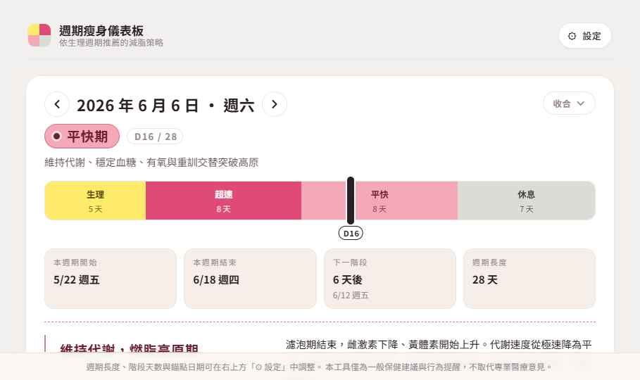
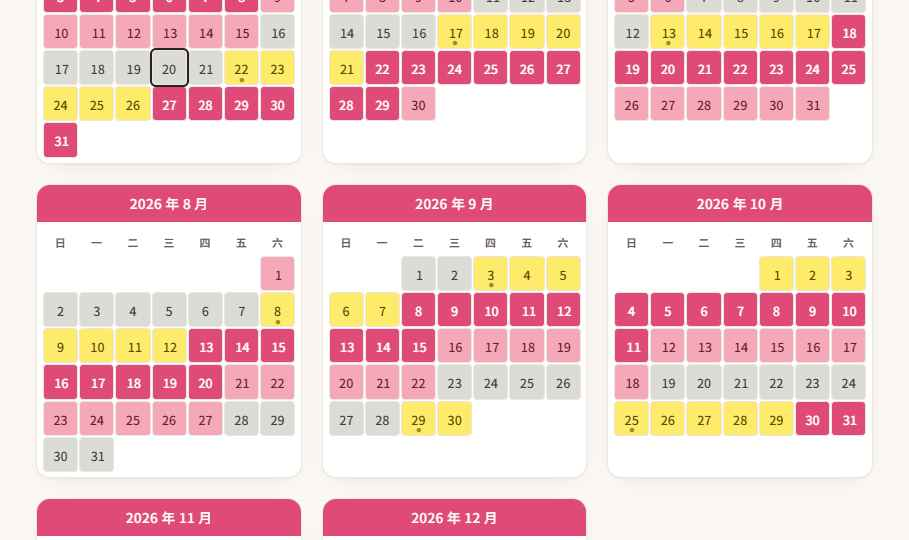
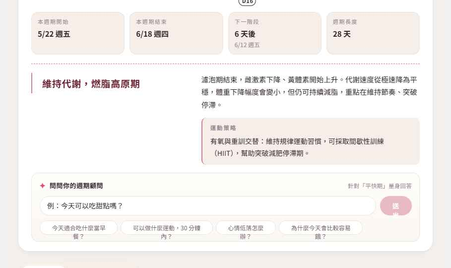
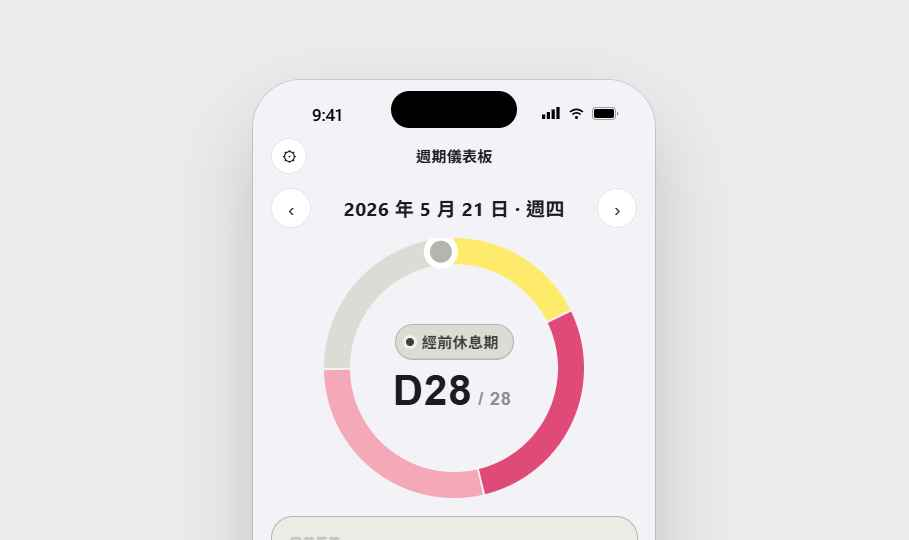

1
Step 01 · 拆解
先把「表格」拆成資料
第一步不是寫畫面，而是把那張表翻譯成程式看得懂的結構。我把週期切成
四個階段，每個階段記下名稱、顏色、天數，以及對應的飲食與運動重點——
全部收進一份 PHASES 設定檔。資料乾淨了，後面一切才好接。
整個東西的起點，只是手機相簿裡一張「生理週期 × 減脂」的對照表截圖。 與其每天放大來看，我決定把它寫成一個會自己運作的小工具。以下是這趟做下來的順序。
第一步不是寫畫面，而是把那張表翻譯成程式看得懂的結構。我把週期切成
四個階段，每個階段記下名稱、顏色、天數，以及對應的飲食與運動重點——
全部收進一份 PHASES 設定檔。資料乾淨了，後面一切才好接。
核心是一個小函式：給它「最近一次生理期開始日」和週期長度， 它就推算出今天落在哪個階段、是週期第幾天、距離下一階段還有多久。 這顆引擎一通，整個 App 才從靜態表格變成「會跟著日期動」的儀表板。

只看「今天」不夠，我想要能提前規劃。於是把計算引擎套用到一整季的每一天， 依階段替日子上色，做成月曆視圖。哪幾天是黃金減脂期、哪幾天該休養， 排聚餐和訓練時一眼就能避開或衝刺。

有了「今天是哪個階段」這個情境，我把它當成提示餵給 AI 顧問。 這樣問「現在能吃甜點嗎」「30 分鐘適合做什麼」時，回答會貼著當下階段給， 而不是千篇一律的通用建議。工具從「查表」升級成「能對話」。

最後一步是讓它真的用得起來。我把它打包成 PWA、加上離線快取， 手機加到主畫面就像原生 App 一樣開。會每天看的工具， 就得在隨手可及的地方——這步讓它從「網頁」變成「習慣」。

回頭看，順序其實很簡單：先把資料理乾淨 → 寫一顆會算的引擎 → 用不同畫面把它呈現出來。 最花心思的不是介面，而是最前面那一步——把一張看得懂的表，整理成電腦也算得動的結構。